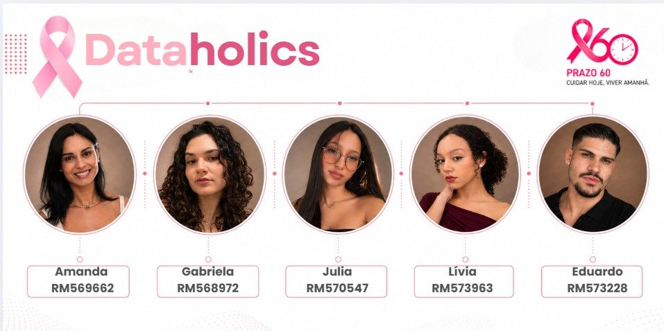

Plataforma de inteligência em saúde pública · Dataholics
Prazo60
Diagnóstico não pode esperar. Tratamento também não.
O Prazo60 utiliza dados públicos para transformar informações sobre o atendimento oncológico no SUS em inteligência para acompanhamento do prazo legal de tratamento, identificação de gargalos e apoio à tomada de decisão.
As pacientes estão iniciando o tratamento dentro de 60 dias? Dado real
Como a plataforma conta a história
Do dado à decisão
- 01Existe um problemaVisão executiva do cumprimento da Lei 12.732/2012.
- 02Conseguimos medi-loDistribuição dos dias entre diagnóstico e tratamento.
- 03Conseguimos localizarRegiões e municípios no mapa de São Paulo.
- 04Identificamos gargalosAlertas por regras explícitas e fatores relacionados.
- 05Encontramos alternativasUnidades oncológicas próximas nos dados oficiais.
- 06Simulamos cenáriosImpacto estimado de redistribuir o fluxo.
- 07Apoiamos a decisãoRecomendações com fundamento e limitações.
O que está acontecendo?
Diagnóstico: quantas pacientes iniciam o tratamento acima do prazo legal e como isso evolui.
Ver diagnóstico →Onde está acontecendo?
Localização: DRS e municípios com maior percentual acima de 60 dias e maior pressão assistencial.
Ver mapa →O que podemos fazer?
Apoio à decisão: alternativas de encaminhamento e simulação do impacto, sempre identificadas como tal.
Simular →Caso de uso completo
Um gestor, um município crítico, uma decisão apoiada por dados
- SituaçãoMunicípio com alto percentual acima de 60 dias.Gargalos
- DiagnósticoQuantidade, percentual, evolução e comparação regional.Visão Executiva
- InvestigaçãoPressão entre demanda e oferta habilitada.Demanda & Oferta
- LocalizaçãoUnidades oncológicas próximas.Para onde encaminhar?
- SimulaçãoTeste de redistribuição com premissas explícitas.Simulador
- BIAnálise aprofundada no relatório Power BI.Power BI
- IAPerguntas em linguagem natural ao Oracle Select AI (roadmap).Prazo60 AI
O que os dados mostram?
Visão Executiva Dado real
A situação em poucos segundos: cumprimento do prazo legal, tendência e onde agir primeiro.
Como o indicador evoluiu mês a mês?
Qual a distância até a meta?
Como cada ano se compara?
Quem precisa de atenção?
Recomendações de apoio à decisão
Geradas por regras explícitas sobre os dados. Não são ordem médica, decisão clínica nem substituem a regulação oficial.
O que acontece entre o diagnóstico e o tratamento?
Panorama dos 60 Dias Dado real
Cada caso classificado pelo tempo até o primeiro tratamento, a partir do diagnóstico confirmado.
Dia 0 Dia 30 Dia 45 Dia 60
limite legal Acima de 60
Como os casos se distribuem por faixa de dias?
A distribuição mudou ao longo dos anos?
O tempo varia com o tipo do primeiro tratamento?
Por que isso pode estar acontecendo?
Demanda & Oferta Dado real
Casos de câncer de mama comparados com a oferta habilitada em oncologia (CACON/UNACON) em cada região.
Existe relação entre pressão assistencial e tempo até o tratamento?
Cada ponto é uma DRS. Correlação observada não implica causalidade.
Quais regiões concentram maior volume?
Quem está pior em cada critério?
Para onde as pacientes se deslocam para tratar?
Onde estão os problemas?
Mapa de Atendimento Dado real
17 Departamentos Regionais de Saúde, municípios e unidades que trataram casos C50. Clique em uma região para ver o detalhe e filtrar a plataforma.
Onde está o problema? Quem precisa de atenção?
Onde estão os gargalos? Dado real
Classificação automática das regiões comparando os dois últimos anos fechados.
Regiões por classificação
Municípios críticos (≥ 30 casos no ano)
Por que isso pode estar acontecendo? Fatores relacionados por região
Fatores observados, não causas comprovadas. Destaques indicam valores piores que a mediana estadual.
O que podemos fazer?
Motor de apoio à decisão
Quais alternativas existem?
Para onde encaminhar? Dado real Distância estimada
Unidades oncológicas próximas encontradas nos dados oficiais disponíveis, a partir do município de origem da paciente.
Lógica de decisão · exemplo demonstrativo
Paciente residente em São Bernardo do Campo
- Identificar unidades próximasUnidades com habilitação confirmada (CIB-SP) ou que trataram ao menos 30 casos C50 na base, ordenadas por faixa de distância.
- Avaliar distânciaLinha reta entre sedes municipais (estimativa, não é rota).
- Avaliar informações assistenciaisHabilitação, volume de casos, percentual acima de 60 dias e mediana observados na unidade.
- Apresentar alternativasLista ordenada, incluindo onde as residentes já tratam hoje.
- DisponibilidadeSem dado real de ocupação: a decisão final depende da regulação (ex.: CROSS-SP).
O que acontece se redistribuirmos?
Simulador de Encaminhamento Simulação
Parte de dados reais de fluxo e espera, aplica um cenário e estima o impacto com premissas explícitas e ajustáveis.
- 1Município de origem
- 2Cenário
- 3Executar
- 4Resultado
Etapa 1 · Selecionar município de origem
Etapa 2 · Selecionar cenário
Premissas do modelo Premissa
Etapa 3 · Executar simulação
Análise aprofundada
Business Intelligence
Camada analítica integrada ao portal: o relatório Power BI do Prazo60 para exploração detalhada.
Relatório Power BI
Abrir em nova aba ↗Como incorporar e atualizar o relatório
Onde inserir o embed
No painel do Render (Environment), defina POWERBI_EMBED_URL com o endereço de incorporação (https://app.powerbi.com/...) e, opcionalmente, POWERBI_TITULO. O servidor valida o domínio e a política de segurança já autoriza apenas app.powerbi.com e app.fabric.microsoft.com em iframes.
Como atualizar
Alterações no relatório publicadas no Power BI Service aparecem automaticamente. Trocar o relatório exige apenas mudar a variável e reiniciar o serviço; nenhum código é alterado.
Permissões necessárias
“Publicar na Web” exige permissão do administrador do tenant. “Inserir em site ou portal seguro” exige licença Pro/PPU para cada visualizador e login Microsoft. Embed com token (Power BI Embedded) exige capacidade dedicada e backend.
Limitações e riscos
“Publicar na Web” torna o relatório público para qualquer pessoa com o link, mesmo com o login desta plataforma, e não aceita segurança em nível de linha. Use apenas com dados agregados. Para ambientes privados, prefira “portal seguro” ou Power BI Embedded (token gerado no backend).
Pergunte aos dados
Prazo60 AI Roadmap técnico
Perguntas em linguagem natural respondidas pelo Oracle Select AI sobre a base do Prazo60, sempre através do backend.
Arquitetura da integração
- FrontendEsta tela. Sem credenciais.
- API BackendFastAPI · /api/ia/perguntar · sessão + limite de uso
- Camada de acessopython-oracledb (mTLS/wallet) ou ORDS
- Oracle Autonomous DatabasePrazo60DB · OCI São Paulo
- Select AIDBMS_CLOUD_AI · perfil PRAZO60_AI_GOOGLE · modelo Google Gemini
- RespostaTexto + SQL gerado, para auditoria
Senhas, wallet e connection string ficam apenas em variáveis de ambiente do servidor. O navegador nunca acessa o banco.
Evidência do protótipo
Consultas já validadas com Select AI Dado real · escopo de 200 casos
APIs previstas
O que sustenta esse diagnóstico?
Dados & Metodologia
Transparência técnica para que a plataforma seja defensável, não apenas visualmente bonita.
Painel-Oncologia (INCA/DATASUS)
- Origem
- Extrato POBR, casos fechados de câncer de mama (CID-10 C50), sexo feminino, Estado de São Paulo.
- Período
- Diagnósticos de jan/2022 a abr/2026 (2026 parcial).
- Tratamento
- 765 de 46.181 registros descartados por data de tratamento anterior ao diagnóstico; 45.416 válidos.
- Transformação
- Dias = início do tratamento − diagnóstico; município IBGE → DRS pela malha oficial (645 municípios).
Indicadores territoriais de oferta
- Origem
- Painel-Oncologia: mamografias de rastreio (50–69 anos) e estabelecimentos habilitados CACON/UNACON por DRS.
- Período
- 2022 a 2026, fechamentos anuais (referência: 2025).
- Limitação
- Volumes absolutos, sem denominador populacional.
CNES e deliberações CIB-SP
- Origem
- CNES tratante de cada caso; nome e tipo de habilitação confirmados para 20 unidades em deliberações da CIB-SP.
- Limitação
- Demais unidades exibidas pelo código CNES, sem nome confirmado. Endereço não carregado.
Coordenadas municipais
- Origem
- Sedes municipais derivadas do IBGE (conjunto aberto kelvins/municipios-brasileiros).
- Uso
- Distância em linha reta e posição dos municípios no mapa. Não representa rota nem tempo de viagem.
SIH/SUS e RHC/INCA
- Uso futuro
- Internações e registro hospitalar de câncer para complementar estadiamento, procedimentos e desfechos.
- Status
- Não carregados nesta versão; nenhum indicador da plataforma depende deles.
Oracle Autonomous Database
- Origem
- Prazo60DB (OCI São Paulo), carga completa por scripts SQL (staging → dimensões → fatos).
- Status
- Mesmos 45.416 casos; acesso previsto via backend.
Pipeline de dados
- Fontes oficiaisPainel-Oncologia, CNES, IBGE
- IngestãoExtratos CSV / XLSX
- TratamentoPython · regras de validade
- PadronizaçãoIBGE 6 dígitos, CNES 7, datas
- ValidaçãoConferência 34/34 DRS
- Banco de dadosOracle ADB · base minimizada
- IndicadoresAPI agregada com supressão
- DashboardEsta plataforma
- Apoio à decisãoAlertas, localizador, simulação
Arquitetura tecnológica
Universo: casos C50, sexo feminino, residência ou tratamento em SP, diagnóstico 2022–2026, com tratamento iniciado.
Minimização
O servidor guarda apenas ano/mês do diagnóstico, município, CNES, tipo de tratamento e dias. Código do caso, data de nascimento e datas exatas são removidos no ETL.
Anonimização e pseudonimização
A base chega sem CNS, CPF ou nome. Nenhum identificador direto existe em qualquer camada da plataforma.
Agregação e supressão
A API devolve apenas agregados. Grupos com menos de 10 casos têm percentuais e medianas suprimidos (“<10”), reduzindo o risco de reidentificação em municípios pequenos.
Finalidade
Monitorar o cumprimento da Lei 12.732/2012 e apoiar gestão pública. Nenhum uso para decisão clínica individual.
Segurança
HTTPS, senha com hash PBKDF2, sessão assinada HttpOnly de 8 horas, limite de tentativas, CSP, proteção CSRF e nenhum segredo no navegador.
Governança
Fontes, fórmulas, regras de alerta e premissas de simulação documentadas e auditáveis. Repositório privado recomendado para a base minimizada.
O que nunca é exibido
- Nome de paciente
- CPF
- CNS
- Endereço residencial
- Telefone
- Data de nascimento
- Qualquer registro individual
- Dados públicos possuem defasagem. O diagnóstico mais recente é de maio/2026; anos recentes ainda recebem registros.
- Ocupação hospitalar em tempo real não está disponível nas bases públicas utilizadas.
- Localização de uma unidade não significa existência de vaga.
- Simulações são cenários hipotéticos, com premissas declaradas e ajustáveis.
- Recomendações não substituem a regulação oficial (CROSS-SP, DRS, gestores municipais).
- O sistema é uma ferramenta de apoio à decisão, não de decisão clínica.
- Dados individuais não são expostos em nenhuma tela, API ou exportação.
- Viés de casos fechados: a base só contém pacientes que já iniciaram tratamento; esperas longas ainda em curso não aparecem, o que pode subestimar o atraso nos anos mais recentes.
- Correlação não é causalidade: demanda/oferta e fatores relacionados indicam padrões, não causas.
- Oferta sem denominador populacional e distâncias em linha reta entre sedes municipais.
Sobre o Prazo60
Diagnóstico não pode esperar. Tratamento também não.
Um produto de dados para apoio à decisão em saúde pública, desenvolvido pelo grupo Dataholics.
Base legal
Lei nº 12.732/2012 · o paciente com neoplasia maligna tem direito de iniciar o primeiro tratamento no SUS em até 60 dias contados do diagnóstico registrado em prontuário.
O problema
Pacientes com câncer de mama diagnosticadas no SUS em São Paulo enfrentam esperas que, em grande parte dos casos, ultrapassam o limite legal. Cada semana a mais pode significar progressão da doença.
Contexto
O câncer de mama é o mais incidente entre mulheres no Brasil. Dados públicos existem, mas estão dispersos e raramente chegam ao gestor como resposta a perguntas práticas.
Objetivo
Responder se as pacientes iniciam o tratamento em 60 dias e, quando não, onde o problema acontece, que fatores se relacionam a ele e quais alternativas podem ser avaliadas.
Metodologia
45.416 casos C50 (2022–2026) do Painel-Oncologia, cruzados com oferta habilitada, CNES e malha municipal do IBGE; indicadores com fórmulas públicas e validação automática.
Arquitetura
ETL em Python, Oracle Autonomous Database, API FastAPI com autenticação e agregação, frontend modular, Power BI e Select AI como camadas de aprofundamento.
Impacto esperado
Priorização mais rápida de regiões críticas, discussão de pactuações regionais baseada em evidência e transparência sobre o cumprimento de um direito das pacientes.
Ética
Somente dados agregados, supressão de grupos pequenos, identificação clara do que é real, estimado ou simulado, e limitações sempre visíveis.
Fontes
Painel-Oncologia (INCA/DATASUS), CNES, deliberações CIB-SP, IBGE. SIH/SUS e RHC/INCA previstos.

Equipe
Dataholics
Amanda, Eduardo, Gabriela, Julia e Livia.
“Nós não usamos dados apenas para mostrar o problema. Usamos dados para entender o problema e apoiar a construção da solução.”